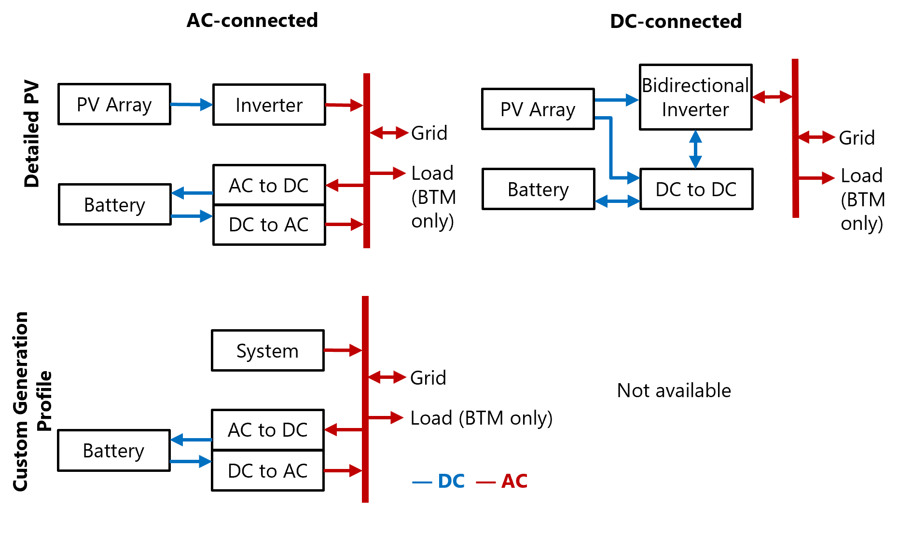
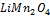
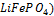
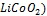
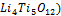
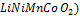
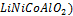
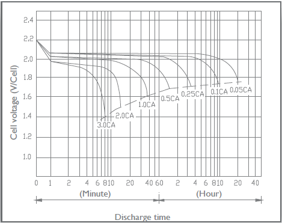
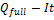
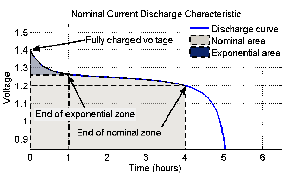

Battery Cell and System#
The Battery Cell and System page displays inputs describing the battery’s performance characteristics.
Behind-the-meter (BTM) and Front-of-meter (FOM) Batteries#
The financial model determines whether you are modeling a behind-the-meter (BTM) or front-of-meter (FOM) battery.
A BTM battery can discharge to the grid or to meet a building or facility’s electricity load. A BTM battery may be standalone or installed with on-site power generating equipment to reduce a residential or commercial building or facility owner’s electricity bill. SAM assumes the battery is BTM for the Distributed financial models (Residential, Commercial, and Third Party Ownership).
A FOM battery can only discharge to the grid. It may be standalone or installed as part of a power generation project to maximize revenue for a power generation project. The battery is FOM for the PPA financial models (Single Owner, Partnership Flip, Sale Leaseback) and for the Merchant Plant model.
The battery in a PV-battery application may be connected either to the AC or DC side of the inverter.

Figure 1: Battery Configurations. Standalone battery is the same as Custom Generation Profile but with no system.
Note
For a DC-connected PV-storage system, SAM assumes that the inverter on the Inverter page is a bidirectional or hybrid inverter that converts both DC power to AC and AC power to DC whether or not the inverter actually supports bidirectional conversion. You can use the “CEC hybrid” field in the inverter library to help identify bidirectional inverters.
Chemistry#
The battery type defines the battery chemistry for (lithium ion, lead acid, or flow battery), and the type of battery for each chemistry. When you choose a battery type, SAM automatically changes the battery property input variables to default values for that type. These default values were drawn from DiOrio (2015) “Technoeconomic Modeling of Battery Energy Storage in SAM” available here, which also includes more details on how SAM calculates battery capacity.
- Battery type
Choose the battery chemistry and battery type for the batteries in your system.
When you choose a battery type, SAM replaces the values of Voltage Properties and Current and Capacity input variables as appropriate with values for each battery type.
When you choose a custom battery type for either the lead acid or lithium ion chemistry, SAM does not replace the input variable values.
To model a battery type not included in the list, choose either Lead Acid: Custom or Lithium Ion: Custom, and specify your voltage, current, and capacity properties appropriate for the battery. When you choose the custom lead acid battery type, SAM retains the capacity and discharge rate values from the table below from the previous state. For example, if you change the battery type from flooded lead acid to custom lead acid, SAM will apply the capacity/discharge rate table for flooded batteries to your custom battery.
Lead Acid#
The three lead acid battery types use the lead acid battery capacity model described in DiOrio (2015), cited above:
Flooded lead acid batteries with a liquid electrolyte.
Valve Regulated (VRLA) batteries are sealed, and the electrolyte is bound in a gel.
VRLA Absorptive Glass Mat (AGM) batteries are sealed, and the electrolyte is immobilized in porous separators.
Lead acid battery capacity is dependent on the discharge rate. When you choose different lead-acid battery types from the list, SAM changes internal variable values that define the relationship between capacity and discharge rate as shown in the table below. It is not possible to change these values from the Battery Storage input page. These values are based on analysis of information for batteries from different manufacturers. SAM considers the 20-hour discharge rate to be the nominal capacity of a lead-acid battery and scales the capacity at faster discharge rates as a percent of the that 20-hour capacity.
Discharge Rate |
Flooded Capacity % |
VRLA Gel Capacity % |
VRLA AGM Capacity % |
|---|---|---|---|
20-hr ( 0.05 C ) |
100 |
100 |
100 |
10-hr ( 0.1C ) |
87 |
84.9 |
93.2 |
1-hr ( C ) |
47 |
63.1 |
58.1 |
Lithium Ion#
The six lithium ion battery types use of the lithium-ion battery capacity model described in DiOrio (2015) “Technoeconomic Modeling of Battery Energy Storage in SAM” cited above:
LMO: Lithium Manganese Oxide (

) – An inexpensive high-voltage cathode material with high power capabilities but potentially lower lifespan.LFP: Lithium Iron Phosphate (

– A lower voltage cathode material with excellent safety properties but lower volumetric energy.LCO: Lithium Cobalt Oxide (

– Among the first and still a common cathode material with high specific energy, but potentially costly and toxic.LTO: Lithium Titanate (

– A promising anode material with excellent lifetime properties but lower specific capacity and important cost considerations.NMC: Nickel Manganese Cobalt (

– A less expensive cathode material than LCO with potentially improved safety characteristicsNCA: Nickel Cobalt Aluminum (

– Similar in respects to NMC as a cathode material with high specific energy
When you choose a lithium ion battery, SAM assigns values to voltage, lifetime, and thermal properties as appropriate from Reddy (2011), available here, and from manufacturer data sheets. SAM does not change any internal variables or calculations.
Flow Batteries#
Flow battery designers can decouple power output (kW) from energy capacity (kWh) when sizing systems. Flow batteries may be able to cycle more deeply and operate for more total cycles than lithium ion or lead acid batteries, but flow batteries also have pumps, which should be considered when calculating Ancillary Equipment Losses.
- Vanadium Redox Flow
The vanadium redox flow battery model available in SAM comes from R. D’Agnostino et. al, (2014) “A Vanadium-Redox Flow-Battery Model for Evaluation of Distributed Storage Implementation in Residential Energy Systems”
VRFB: Vanadium Redox Flow (V 2+,V 3+ anolyte ), (VO 2+, VO 2+, catholyte )
- All Iron Redox Flow
The all iron redox flow battery model available in SAM shares the same input field framework as the vanadium flow battery, but relies on tabular voltage vs. depth-of-discharge in place of a voltage model. Default iron flow battery values are based on preliminary manufacturer data and feedback for an all-iron hybrid-redox flow battery.
AIFB: All Iron Redox Flow (Fe 2+, Fe 3+ )
Battery Bank Sizing#
The two battery bank sizing options allow you to either automatically size the battery bank based on desired size, or to manually specify the number of cells per string and strings in parallel.
The automatic option uses the basic equations described below to determine numbers of cells and strings or stacks, which may not always result in realistic values. If you use the automatic sizing option, be sure to check the Computed Properties values to be sure they are what you expect.
Set Desired Bank Size: Automatic Sizing#
For automatic sizing choose Set desired bank size.
- Desired bank power, kW
The battery’s maximum discharge rate in kW. Compare this to Maximum discharge power under Computed Properties to verify that SAM calculated a discharge power close enough to the desired value to meet your requirements.
The desired bank power can be in either DC kW or AC kW depending on whether you choose DC units or AC units. If you use AC units, SAM calculates the nominal bank power in DC kW using the appropriate conversion efficiency from the Power Converters section for either an AC- or DC-connected battery.
- Desired bank capacity, h or kWh
The nominal size of the battery bank. Choose h to specify the size in hours of storage at the nominal discharge rate, or choose kWh to specify the size in kWh of available energy. Compare this to Nominal bank capacity under Computed Properties to verify that SAM calculated a nominal value close enough to the desired value to meet your requirements.
Note
Some battery data sheets provide both a nominal battery capacity and an available or usable battery capacity that is less than the nominal capacity. Use the higher nominal capacity value for the desired bank size, and then use the inputs under Charge Limits and Priority on the Battery Dispatch page to limit the battery to the available capacity. This will ensure that SAM calculates costs in $/kWh based on the nominal capacity.
Specify Cells: Manual Sizing#
For manual sizing choose Specify cells.
- Number of cells in series
The number of cells in series in each string of the battery bank. The number of cells in series determines the maximum discharge power and the nominal bank voltage.
- Number of strings in parallel
The number of strings of cells in parallel in the battery bank. The number of strings in parallel determines the nominal bank capacity.
- Max C-rate of charge, per/hour
The maximum charge rate as a fraction of the battery bank capacity. For example, a 10 kWh battery with C-rate of charge of 0.5 can charge at a maximum rate 10 kWh × 0.5/h = 5 kW.
- Max C-rate of discharge, per/hour
The maximum discharge rate as a fraction of the battery bank capacity. For example, a 10 kWh battery with C-rate of discharge of 0.5 can discharge at a maximum rate 10 kWh × 0.5/h = 5 kW.
Note
For flow batteries, the capacity and power are decoupled so the the C-rate is a calculated value rather than an input.
Calculations for Automatic Bank Sizing#
SAM’s bank sizing calculations use basic equations using the cell property information you specify. The calculated values are designed to help you get started with your system design. They do not account for many real-life design factors. You should use these values for an initial preliminary analysis and then use Specify cells for conventional batteries or Specify capacity and stack configuration for flow batteries to refine your analysis.
- Number of cells in series, Number of cells per stack
SAM calculates a number of cells in series for a conventional battery, or cells per stack for a flow battery assuming one stack, that either meets exactly or slightly exceeds the desired bank voltage based on the cell nominal voltage. For example, for a desired bank voltage of 24 V with a nominal cell voltage of 3.6 V, SAM calculates 24 V ÷ 3.6 V/cell = 6.7, or 7 cells in series. The actual nominal bank voltage is 3.6 V/cell × 7 cells = 25.2 V. SAM displays the actual battery bank properties as calculated values under Current and Capacity.
- Number Strings in parallel (Lithium-ion and Lead-acid Batteries)
SAM calculates the bank capacity by determining the number of strings of cells in parallel required to ensure that the actual capacity is as close as possible to the desired value given the cell capacity that you specify under Current and Capacity. For the example above, if the desired bank capacity is 3 kWh, and the cell capacity is 1.5 Ah, the calculated bank voltage would be 25.2 V, and one string of cells has a capacity of 25.2 V × 1.5 Ah = 37.8 Wh, or 0.0378 kWh. To reach the desired bank capacity of 3 kWh: 3 kWh ÷ 0.0378 kWh/string = 79.4, or 80 strings.
The calculated C-rates of charge and discharge are the desired bank power divided by the computed bank capacity.
- Capacity and Stack Configuration (Flow Batteries)
For flow batteries, the capacity is independent of the power block and can be specified exactly by the amount of electrolyte in the tanks. SAM sets nominal bank capacity to the desired capacity you specify. SAM calculates the nominal power ratings using the desired stack (bank) voltage and other properties in the Current and Capacity group. The number of stacks in parallel is depends on whether the cells are power limited or current limited.
For the Power limited option, the number of stacks in parallel is the ceiling of the desired bank power divided by the product of Cell max power discharge and the number of cells in the stack (assuming one stack in series). For example, consider a flow battery with a desired bank capacity of 100 kWh, bank power of 50 kW, and bank voltage of 48V with 1.4V cells and a cell power discharge max of 2W. The number of cells in the stack is ceiling(48V ÷ 1.4V/cell) = ceiling(34.2 cells) = 35 cells . The bank voltage is 35 cells × 1.4V/cell = 49V . To achieve 50KW with limitations of 2W/cell, there must be ceiling(50 kW / (0.002 kW/cell * 35 cells)) = 715 stacks in parallel.
For the Current limited option, the number of stacks in parallel is the ceiling of the desired bank power divided by the product of the battery bank voltage and Cell max current discharge. In the example above, if all properties are the same except the battery is current limited with 10A per cell (and consequently per stack), the number of stacks in parallel must be: ceiling(50 kW / (49V * 10 A * 0.001) ) = 103 stacks in parallel.
For the Limit both current and power option, the stacks are sized by using the current limit, and within the model at each time step the current and power through the cells are checked and reduced if necessary.
Current and Capacity#
The Current and Capacity parameters depend on the battery chemistry:
For lead acid and Lithium-ion batteries, you specify a cell capacity value, and SAM displays the computed properties based on the battery bank sizing parameters.
For flow batteries, you choose whether the battery is power- or current-limited and specify minimum and maximum rates.
Lead Acid and Lithium-ion Battery Parameters#
- Desired bank voltage
The battery bank voltage you are trying to achieve in your design. This input is only enabled when you choose Set desired bank size. SAM calculates the number of cells in series based on the desired bank voltage and cell nominal voltage:
Number of Cells in Series = ROUND UP ( Desired Bank Voltage ÷ Cell Nominal Voltage )
- Cell nominal voltage
The reference voltage of a single, fully charged cell in the battery as reported by the manufacturer. The typical nominal voltage for a lead acid cell is 2 V, and for lithium ion cell is 3.7 V.
SAM uses the nominal voltage to size the battery bank and compute the battery bank’s nominal voltage.
- Cell capacity
The capacity of a single cell when the battery is fully charged. SAM sets this value to a default value when you choose a battery chemistry, but you can change its value.
Flow Battery Parameters#
- Desired bank voltage
The battery bank voltage you are trying to achieve in your design. This input is only enabled when you choose Set desired bank size. SAM calculates the number of cells in series based on the desired bank voltage and cell nominal voltage:
Number of Cells in Series = ROUND UP ( Desired Bank Voltage ÷ Cell Nominal Voltage )
- Cell nominal voltage
The reference voltage of a single, fully charged cell in the battery as reported by the manufacturer.
SAM uses the nominal voltage to size the battery bank and compute the battery bank’s nominal voltage.**Power limited with Cell max power charge and discharge** Limit the maximum charge and discharge power.
- Current limited with Cell max current charge and discharge
Limit the maximum charge and discharge current.
- Limit both current and power
Limit both the charge limits by both power and current.
Computed Properties#
The computed properties are a summary of the battery bank system design. The values may either be ones that you specify or that SAM calculates depending on whether you choose the Set desired bank size or Specify cells option.
- Nominal bank capacity, DC kWh
The nominal size of the battery. SAM uses this value in battery cost calculations with $/kWh units, and to determine the battery state of charge and capacity reduction over the battery life.
Nominal Bank Capacity (DC kWh) = Cell Capacity (Ah) × Cell Voltage (VDC) × Total Number of Cells
The cell voltage is shown under Battery Voltage.
- Nominal bank power, DC kW
The nominal maximum discharge power in DC kW. SAM uses this value in battery cost calculations with $/kW units.
- Time at maximum power
The number of hours the battery could discharge continuously at its maximum discharge power. This is either the input value you provide under Battery Bank Sizing, or calculated as:
Time at Maximum Power (h) = Nominal Bank Capacity (kWh) ÷ Maximum Discharge Power (kW)
- Nominal bank voltage, VDC
The nominal voltage of the battery bank.
Nominal Bank Voltage (VDC) = Cell Voltage (VDC) × Cells in Series
- Total number of cells
The product of cells (stacks) in series and strings (stacks) in parallel.
- Cells in series / Cells per stack
The number of cells in series in each string.
If you choose Set desired bank size under Battery Bank Sizing:
Cells in Series = Nominal Bank Voltage (VDC) ÷ Nominal Cell Voltage (VDC)
If you choose Specify cells, then this is the value you entered for Number of cells in series under Battery Bank Sizing.
- Strings in parallel / Stacks in parallel
The number of strings of battery cells in series in the battery bank.
If you choose Set desired bank size under Battery Bank Sizing:
Strings in Parallel = Nominal Bank Capacity (kWh) ÷ ( Cell Capacity (Ah) × Nominal Cell Voltage (VDC) )
If you choose Specify cells, then this is the value you entered for Number of strings in parallel under Battery Bank Sizing.
- Stacks in series
For flow batteries, the number of stacks in series.
- Max C-rate of discharge, per/h
If you choose Set desired bank size under Battery Bank Sizing, SAM calculates the value as:
Max C-rate of Discharge (per/h) = Maximum Discharge Power (DC kW) ÷ Nominal Bank Capacity (DC kWh)
If you choose Specify cells, then this is the value you entered for Max C-rate of discharge under Battery Bank Sizing.
- Max C-rate of charge, per/h
If you choose Set desired bank size under Battery Bank Sizing, SAM calculates the value as:
Max C-rate of Charge (per/h) = Maximum Charge Power (DC kW) ÷ Nominal Bank Capacity (DC kWh)
If you choose Specify cells, then this is the value you entered for Max C-rate of charge under Battery Bank Sizing.
- Maximum discharge current, A
The battery’s maximum discharge current. The battery may discharge at a rate up to the maximum.
Maximum Discharge Current (A) = Nominal Bank Capacity (DC kWh) ÷ Nominal Bank Voltage (VDC) × Max C-rate of Discharge (1/h) × 1000 Wh/kWh
- Maximum charge current, A
The battery’s maximum charge current. The battery may charge at a rate up to the maximum.
Maximum Discharge Current (A) = Nominal Bank Capacity (DC kWh) ÷ Nominal Bank Voltage (VDC) × Max C-rate of Charge (1/h) × 1000 Wh/kWh
- Maximum discharge power, DC kW
The battery can discharge at up to the maximum discharge power. The maximum discharge power is also the nominal DC power of the battery bank used for $/kW-based battery cost calculations.
When the units for Desired bank power are DC kW:
Maximum Discharge Power (DC kW) = Cell Capacity (Ah) × Cell Nominal Voltage (VDC) × Max C-rate of Discharge (1/h) × Total Number of Cells ÷ 1000 W/kW
When the units for Desired bank power are AC kW, the discharge power in DC kW depends on whether the battery is AC-connected or DC-connected.
AC-connected:
Maximum Discharge Power (DC kW) = Desired Bank Power (AC kW) ÷ DC to AC Conversion Efficiency
DC-connected:
Maximum Discharge Power (DC kW) = Desired Bank Power (AC kW) ÷ ( DC to AC Conversion Efficiency × Inverter Nominal Efficiency )
- Maximum charge power, DC kW
The maximum charge power, calculated from the nominal bank capacity and maximum C-rate of charge.
When the units for Desired bank power are DC kW:
Maximum Charge Power (DC kW) = Cell Capacity (Ah) × Cell Nominal Voltage (VDC) × Max C-rate of Charge (1/h) × Total Number of Cells ÷ 1000 W/kW
When the units for Desired bank power are AC kW, the discharge power in DC kW depends on whether the battery is AC- or DC-connected.
AC-connected:
Maximum Charge Power (DC kW) = Desired Bank Power (AC kW) ÷ DC to AC Conversion Efficiency
DC-connected:
Maximum Charge Power (DC kW) = Desired Bank Power (AC kW) ÷ ( DC to DC Conversion Efficiency × Inverter Nominal Efficiency )
- Maximum discharge power, AC kW
The AC equivalent of the discharge power in DC kW.
For the Set desired bank size option, if the Desired bank power units are AC kW, SAM sets the maximum discharge power to the desired value.
Otherwise, it is calculated from the DC value:
AC-connected:
Maximum Discharge Power (AC kW) = Maximum Discharge Power (DC kW) × DC to AC Conversion Efficiency
DC-connected:
Maximum Discharge Power (AC kW) = Maximum Discharge Power (DC kW) × ( DC to DC Conversion Efficiency × Inverter Nominal Efficiency )
- Maximum charge power, AC kW
The AC equivalent of the charge power in DC kW.
For the Set desired bank size option, if the Desired bank power units are AC kW, SAM sets the maximum charge power to the desired value.
Otherwise, it is calculated from the DC value:
AC-connected:
Maximum Charge Power (AC kW) = Maximum Charge Power (DC kW) × DC to AC Conversion Efficiency
DC-connected:
Maximum Charge Power (AC kW) = Maximum Charge Power (DC kW) × ( DC to DC Conversion Efficiency × Inverter Nominal Efficiency )
Power Converters#
For photovoltaic-battery systems, SAM can model a battery that is connected to either the DC or AC side of the photovoltaic inverter.
Note
The DC connected option is only available with the PV Battery configuration. The Standalone and Custom Generation Profile - Battery configurations assume that the battery is the only DC component in the system.
The Power Converters conversion efficiency inputs account for electrical losses associated with any battery power converter equipment except for the photovoltaic inverter. SAM models each battery converter as a fixed conversion efficiency.
The photovoltaic inverter is a separate component from the battery power converters specified here and uses a more sophisticated model with an efficiency curve that varies with the inverter load. You specify the photovoltaic inverter model and parameters on the Inverter page. SAM models the inverter as a hybrid inverter with inputs for both a photovoltaic array and battery, regardless of whether the inverter you choose is actually a hybrid inverter. You can use the cec_hybrid column in the inverter library to find inverters that are specified as hybrid inverters.
DC Connected (PV Battery Only)#
Choose DC Connected for a battery connected to the DC side of a hybrid photovoltaic inverter as shown in the diagram above.
To account for electrical losses from a DC-DC converter between the photovoltaic array and inverter, be sure to assign an appropriate value to the DC power optimizer loss on the Losses page.
For a DC-connected battery, during time steps when the total power from the photovoltaic array and battery is greater than the inverter’s nameplate capacity, the inverter limits its output power to the nameplate capacity. For the dispatch options with Battery can charge from clipped system power enabled on the Battery Dispatch page, if the battery is not fully charged and is not discharging, the array power in excess of the inverter’s nominal capacity charges the battery.
- DC to DC conversion efficiency, %
For the DC-connected option, the electrical conversion efficiency of the battery management system (BMS). SAM applies this loss to power into or out of the battery to account for power consumed by the BMS. SAM disables this input for the AC Connected option.
- Inverter efficiency cutoff, %
For the DC-connected option, the inverter efficiency cutoff is the photovoltaic inverter operating efficiency threshold below which the battery is not allowed to charge from the grid, or to discharge when the discharge power is greater than the inverter’s maximum rated power. SAM reports the inverter operating efficiency in the time series results.
AC Connected#
Choose AC Connected for a battery connected to the grid interconnection point as shown in the diagram above. Power conversion equipment is required to convert DC power from the battery to AC power before it can serve the load or be sent to the grid, and to convert AC power from the grid or pvhotovoltaic inverter before it can charge the battery.
- AC to DC conversion efficiency, %
For the AC-connected option, the electrical conversion efficiency associated with the equipment that converts AC power from either the photovoltaic inverter output or grid to DC power for the battery. SAM disables this input for the DC Connected option.
- DC to AC conversion efficiency, %
For the AC-connected option, the electrical conversion efficiency associated with the equipment that converts DC power from the battery to AC power for either the AC load or grid, or both. SAM disables this input for the DC Connected option.
Charge Limits and Priority#
The Charge Limits and Priority inputs are constraints on the battery dispatch calculations.
The limits on minimum and maximum state of charge affect both the amount of energy available for battery dispatch calculations, and the depth of charge-discharge cycles for battery life calculations. Choose values appropriate for the type of battery you are modeling. The default values state of charge range of 15% to 95% is reasonable for most Li-ion battery types.
- Minimum state of charge, %
A limit on the quantity of energy that can be drained from the battery as a percentage of available capacity. For example, a value of 15% would prevent the battery from discharging below 15% of the battery’s available capacity in a given time step.
Note
The minimum and maximum state of charge are both as a percentage of available battery capacity, which changes over time as the batteries degrade and are replaced. The available capacity in a given time step is likely to be less than the battery’s nominal capacity shown on the Battery Cell and System page.
- Maximum state of charge, %
A limit on the quantity of energy that can be sent to the battery as a percentage of available capacity. For example a value of 95% would prevent the battery from charging above 95% state of charge.
- Initial state of charge, %
The state of charge of the battery at the beginning of the simulation. A value of 100% would be for a fully charged battery, 0% would be for a fully discharged battery.
- Minimum time at charge state, min
There may be periods of time where the photovoltaic or other power system output varies above and below the load causing rapid cycling of the battery. Rapid cycling may also result for dispatch options that respond to power prices when prices change rapidly from time step to time step. This kind of cycling, especially if the cycles are deep, may degrade battery performance over time. The minimum time at charge state prevents the battery from changing between charging and discharging within the number of minutes that you specify.
Note
The minimum time at charge state only applies when the simulation time step is smaller than the minimum time at charge state. For example, the default value of 10 minutes would only apply for 5-minute or 1-minute simulation time steps; It has no effect for hourly simulations.
Battery Voltage#
The voltage properties are technical specifications available on most battery manufacturer data sheets.
Note
When you change the battery type, SAM changes the voltage properties inputs to default values appropriate for the battery chemistry you selected. You can use these default values unless you have better information from a manufacturer’s data sheet or other source.
Battery voltage varies with state of charge as the internal open circuit potential decreases or increases. Voltage variations in charging and discharging affect the battery’s round-trip efficiency reported in the results. During charging, voltage increases, requiring more power to charge the cell. During discharge the voltage decreases and less power can be extracted. The round-trip efficiency is computed as the net amount of energy discharged from a cell divided by how much energy it took to charge the cell.
- Cell Internal resistance, Ohm
The cell internal resistance for each cell in the battery in Ohms. SAM assumes that this is a constant value and uses it in voltage and thermal calculations by scaling the cell internal resistance to a total battery resistance based on the cell configuration.
- Nominal bank voltage, VDC
The battery bank voltage from the Computed Properties on the Battery Cell and System page.
- Nominal cell voltage, VDC
The nominal voltage of a single cell from the Current and Capacity inputs on the Battery Cell and System page.
Electrochemical Model#
The electrochemical voltage model can be used for Lithium-ion and lead acid batteries and provides a way to characterize the battery’s voltage curve using data provided on some battery manufacturer data sheets. It is disabled for flow batteries. The model is described in Section 2.1 of DiOrio (2015) Technoeconomic Modeling of Battery Energy Storage in SAM.
- C-rate of discharge curve
Battery manufacturer data sheets typically include a set of curves like the one below that show cell voltage as a function of charge removed for different discharge rates. The “C-rate” is the current used to discharge the battery. It is defined as the current divided by the rated capacity.
In this example, if the discharge current is given at the 20-hour discharge rate, the C-rate would be I:sub:`20`÷ q:sub:`20`× C = 0.05 × C (C/20) .

- Cutoff cell voltage, VDC
The minimum allowed cell voltage.
- Nominal zone cell voltage, VDC
The cell voltage (Vnom) at the end of the nominal zone, as shown in the Nominal Current Discharge Characteristic graph below.. The cell charge removed at this point is

.- Exponential zone cell voltage, VDC
The cell voltage (Vexp) at the end of the exponential zone, as shown in the Nominal Current Discharge Characteristic graph below. The cell charge removed at this point is
 .
.- Fully charged cell voltage, VDC
The cell voltage (Vfull) at the given C-rate when a cell is at its maximum charge.
Note
The voltage inputs must satisfy Vfull > Vexp > Vnom.
- Charge removed at exponential and nominal point
Voltage vs discharge curves show that cell-voltage typically undergoes several distinct regions depending on charge.

- C-rate of discharge curve
This parameter determines the shape of the voltage curve between the end of the nominal zone and 100% discharge.
Voltage Table#
The voltage table option defines the voltage curve using data from the voltage table. It can be used for any type of battery, but requires data not often provided on manufacturer data sheets.
SAM uses linear interpolation with an adjustment for cell internal resistance for cell voltage calculations during simulations. Each row in the table must have a different voltage value.
The voltage table must contain at least two values, and must include cell voltage values less than and greater than the cell nominal voltage.
To use the voltage table to define the voltage curve:
Choose Voltage table.
For Rows, type the number of pairs of voltage - depth of discharge pairs you want to use to define the voltage. The table will expand to the number of rows you type.
You can also click Import to import data from a text file. Try clicking Export to create a template file to see what the text format should be.
Type values in the depth of discharge and cell voltage columns. The Voltage Discharge graph will update as you type.
Battery Losses#
Some battery systems have losses that are not accounted for by the conversion losses specified under Power Converters above. You can use the ancillary equipment losses to account for these additional losses. By default, these losses are set to zero, which is appropriate for most analyses.
Ancillary Equipment Losses#
These are losses to account for electrical losses or consumption by equipment in the battery system such as for heaters and pumps for temperature control equipment.
For DC-connected batteries, the losses are applied the system’s DC power. For AC-connected systems, they are applied to the AC power.
Losses by operating mode#
Choose this option to specify losses by month that apply when the battery is charging, discharging, or idle.
- Charging mode losses
Losses that apply when the battery is charging.
Click Edit values to specify the loss in kW by month. SAM applies the loss in each time step of the month. For example, if the expected loss in January is 500 W, enter 0.5 for January, and SAM will reduce the available power by 0.5 kW for each time step in January.
- Discharging mode losses
Losses that apply when the battery is discharging.
- Idle mode losses
Losses that apply when the battery is neither charging, nor discharging.
Time series losses#
Choose this option to specify hourly or subhourly time series losses.
- Time series losses
Click Edit array to enter or import kW loss values for each time step of the simulation.
Battery Availability#
Battery availability losses can represent battery downtime for maintenance, system outages, or other times when the battery can neither charge nor discharge. The battery availability loss has the effect of reducing electricity to/from battery and battery state of charge in the time steps with availability losses.
To explore the effect of battery availability losses, use the following output variables
Electricity to/from battery AC (kW)
Battery state of charge (%)
Battery availability loss (%)
The Electricity to […] from battery (kW) and Electricity to battery from […] (kW) variables may also be useful.
Battery availability losses affect both power and capacity. For a time step with availability loss, the loss percentage for that time step applies to both the battery power (kW) and capacity (kWh). Because the availability loss is intended to represent downtime for maintenance, the loss percentage also applies to the battery state of charge, assuming that cells are discharged to safely perform maintenance. This means that the battery will have a lower state of charge at the end of the availability loss period than at the beginning.
Note
If the battery state of charge (SOC) is low when the availability loss period begins, the SOC could fall below the minimum SOC from the Battery Dispatch page. For example, a battery with a 10% minimum SOC that is at its minimum charge state when a period of 50% availability begins, would have a SOC of 5% at the end of the period.
- Edit losses
The Edit Losses window allows you to define loss factors as follows:
Constant loss is a single loss factor that applies to the system’s entire output. You can use this to model an availability factor.
Time series losses apply to specific time steps.
SAM multiplies the battery power in each time step by the loss percentage that you specify for that time step. For a given time step, a loss of zero would result in no adjustment. A loss of 5% would reduce the power by 5%, and a loss of -5% would increase the power by 5%.
Battery Thermal#
The battery thermal model calculates the battery temperature in each simulation time step. Battery temperature affects battery capacity and degradation. The model’s two main heat-transfer terms are transfer between the battery and its environment, and energy generated by resistive heating inside the battery. The cell internal resistance input is under Battery Voltage.
Note
To verify that the battery thermal model is working as you expect, look at the Battery temperature output variable in the time series results to make sure it is within a reasonable range. If the temperature is higher or lower than you expect, you may need to adjust the thermal or physical properties inputs.
Thermal Properties#
- Specific heat Cp, J/kg-K
Estimated specific heat capacity for the battery.
- Heat transfer coefficient h, W/m²-K
Estimated heat transfer coefficient for heat transfer from the battery to the room.
The default value for smaller batteries assumed for behind-the-meter applications is 7.5 W/m²-K. For larger batteries in front-of-meter applications, the default is 15 W/m²-K.
- Environment temp option
Choose how to represent the temperature of the battery’s environment.
- Enter single fixed temperature
Choose this option to model the battery environment temperature as a single constant value throughout the year.
- Enter time series temperature
Choose this option to provide your own time series temperature data for the battery environment.
- Single environment temperature
For the Enter Single Fixed Temperature option, the temperature of the battery environment in degrees Celsius. This is disabled for the Enter Time Series Temperature option.
- Time series environment temperature
For the Enter Time Series Temperature option, click Edit array to enter or import hourly or subhourly temperature data in degrees Celsius. Note that the number of time steps must match the simulation time step determined by the weather file. This is disabled for the Enter Single Fixed Temperature option.
Note
For a battery in a conditioned space, be sure to account for power required for heating or cooling equipment under Battery Losses. SAM does not explicitly model battery heating or cooling equipment, so you should set the battery environment temperature inputs to the temperature of the conditioned space.
Capacity Fade with Temperature#
The manufacturer data sheet may include battery capacity versus temperature data showing how the battery’s capacity decreases with ambient temperature. The Capacity Fade curve must have at least two rows of data.
- Temp, °C
Battery environment temperature in degrees Celsius.
- Capacity, %
Battery discharge capacity as a percentage of rated capacity at the given temperature.
Physical Properties#
The physical properties inputs are designed to scale with battery size so you don’t have to change them each time you change the size of the battery bank. These values should be reasonable estimates of the battery bank or individual battery’s actual dimensions. They do not need to be exact.
- Specific energy per mass (Wh/kg)
Energy content per unit mass. SAM uses this value to calculate the battery bank’s mass based on its rated capacity in kWh. If you know the battery bank mass, you can calculate the specific energy by dividing the battery bank’s rated capacity in DC Watt-hours by its mass in kilograms.
- Battery mass, kg
An estimate of the battery bank’s mass.
Battery Mass (kg) = Nominal Bank Capacity (DC kWh) × 1,000 (Wh/kWh) ÷ Specific Energy per Mass (Wh/kg)
- Compute battery surface area as cube
Choose this option to represent the battery bank as a cube for temperature calculation purposes. This option works better for smaller batteries than larger ones. Disable the option to represent the battery as a single battery.
- Specific energy per volume, Wh/L
The battery bank’s energy content per unit volume. If you know the battery bank’s volume, you can calculate the specific energy by dividing the battery bank’s rated capacity in DC Watt-hours by its volume in liters. This option is enabled with Compute battery surface area as cube.
- Battery volume, m³
For the Compute battery surface area as cube option, an estimate the volume of the battery bank, represented as a cube.
Battery Volume (m³) = Nominal Bank Capacity (DC kWh) ÷ Specific Energy per Volume (Wh/L)
- Energy capacity of one module, kWh
The nominal capacity of a single battery when Compute battery surface area as cube is disabled. This value is only used for battery temperature calculations, so the value should be reasonably close to the actual capacity of a single battery but does not need to be exact.
- Surface area of one module, m²
The surface area of a single battery when Compute battery surface area as cube is disabled. You can calculate this value by multiplying the battery’s length, width, and height measurements.
- Battery surface area, m²
An estimate of the surface area of a single battery when Compute battery surface area as cube is disabled.
Battery Surface Area (m²) = Nominal Bank Capacity (DC kWh) ÷ Energy Capacity of One Module (DC kWh) × Surface Area of One Module (m²)